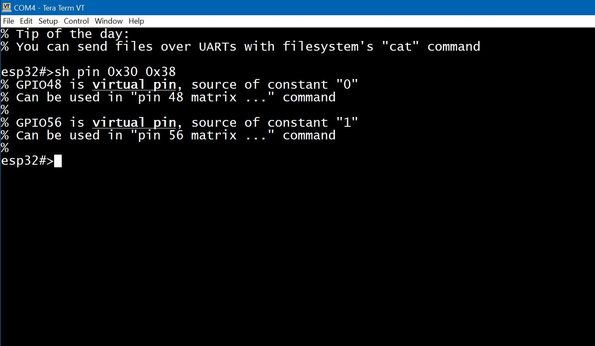

ESP32 has many pins (or GPIOs, both names are used interchangeable throughout the shell documentation) which can be configured to be either a general purpose pin (GPIO) or to bear some function: be a TX pin of a hardware UART interface or be a CLOCK line for an I2C interface for example.
Some pins have system functions: so called "bootstrapping" pins. Their function is to tell the bootloader what to do on boot and how to initialize the hardware. It is ok to use them as long as it does not interfere with booting process
Some pins are reserved for internal use: for example pins 6-11 on most generic ESP32 Dev boards are used to access internal flash: you can play with these pins only if your program is cached by the CPU so no icache-miss happens
Some pins are configured to be INPUT only and this can not be changed
In ESPShell one can play with GPIOs using "pin" command which is used both for displaying information on particular pin and for configuring. Turning pin HIGH or LOW, sending various pulse patterns through pins, enable/disable PWM, setting pin direction and mode, IO_MUX & GPIO_Matrix access for advanced setups and so on can be done manually, thus eliminating fix/compile/upload/check cycles.
ESPShell is able to read digital value on any GPIO unlike digitalRead( ... ), which does not work with pins which are used as hardware interface pins (for example one can not digitalRead() I2C lines). ESPShell uses low level access to pin values so it is completely ok to read values of actively working PWM pin for example. Command "pin NUM read" does this.
Command "pin" takes multiple argumens which are processed in order from left to right. The first argument is a pin number and the rest of arguments are keywords and/or pin numbers to execute. One can think of arguments as of simple program to execute on given pin(s).
For example "pin 2 save out high load" is a valid command with 4 arguments/keywords. This command saves GPIO2 state in its internal register, then changes pin 2 mode to OUTPUT, then sets pin 2 to HIGH and immediately after that the pin state gets loaded (restored) from previously saved copy.
Examples of valid "pin" commands:
pin 1 high 2 low
pin 2 pwm 1000 0.5 delay 250 pwm 1000 0.25 delay 250 loop infinite
Command "pin" can perform actions on single or multiple pins at one. The example below shows "pin" command which sets pins 2 and 4 HIGH while pins 18 and 19 are set LOW:
esp32#>pin 2 high 4 high 18 low 19 lowNumbers 2,4,18 and 19 are pin numbers, while "low" and "high" are keywords; Keywords can appear multiple times in different combinations in a single "pin" statement as shown in Examples section below
To display informaton on an arbitrary pin: type "pin" followed by pin number and press <Enter>
Example below displays GPIO 0,8,1 and 4 basic information (ESP32 DevKit):
esp32#>pin 0 % GPIO0 is unused, strapping pin % Mode: INPUT, PULL_UP, % Output is disabled % Input is done via IO MUX, (function: GPIO0) % Maximum drive current is 20 mA % Digital pin value is HIGH (1) % esp32#>pin 8 % GPIO8 is in use % Mode: INPUT, OUTPUT, PULL_UP, % Output is done via GPIO Matrix, provides path for signal ID: 2 % Input is done via GPIO Matrix, connected signal IDs: 2, % Maximum drive current is 20 mA % Digital pin value is LOW (0) % esp32#>pin 1 % GPIO1 is in use, configured as UART_TX % Mode: INPUT, input is floating % Output is disabled % Input is done via IO MUX, (function: U0TXD) % Maximum drive current is 20 mA % Digital pin value is HIGH (1) % esp32#>pin 4 % GPIO4 is unused % Mode: INPUT, PULL_DOWN, % Output is disabled % Input is done via IO MUX, (function: GPIO4) % Maximum drive current is 20 mA % Digital pin value is LOW (0) % esp32#>
Related command "show pin NUM" is equivalent to command "pin NUM" : both display information on pin number NUM; The only difference is that "show pin" command accepts multiple arguments (pin numbers), and above example can be also done in a single command: "show pin 0 8 1 4"
Note that there are reserved pins: these are used by SoC for its function or are used by drivers (e.g. I2C driver, or PCNT driver) It could be FLASH memory access pins, or pins controlling external PSRAM; such pins are shown as "is in use, configured as..".
How many pins is available on your particular ESP32 board? To obtain information on pin numbers (to find out which pins do exist and which don't exist) one can use command "pin" with non-existing pin number ("pin 99" as an example):

Fig. 1: "pin 99" output (on ESP32-S3 DevKit)
Command pin is used to set pin mode (e.g. PULL_UP/PULL_DOWN, INPUT/OUTPUT, OPEN_DRAIN) and value; equivalent of pinMode() and/or digitalRead()/digitalWrite()/analogRead()
| Keyword | Description and examples |
| NUMBER | A pin number to work with (see Example 7). The very first argument
of the "pin" command is a pin number. This "pin number" keyword can
appear multilpe times in a single "pin" statement. Following is the
example, which sets pins 0, 1 and 2 low:
esp32#>pin 0 low 1 low 2 low
A command, which only contains numbers as its keywords (e.g. "pin 1 2 3") is a valid command which simply does nothing |
| out | Set pin to be output: it is an equivalent of pinMode(pin, OUTPUT) |
| in | Set pin to be input: same as pinMode(pin, INPUT) |
| up | Set weak internal pull-up (~45 kOhm), PULL_UP flag |
| down | Set weak internal pull-down, PULL_DOWN flag |
| open | Configure pin for "open drain" operation, OPEN_DRAIN |
Note that pin mode is not added to existing pin configuration. Instead it gets overwritten: lets say we set pin2 mode to OUTPUT, PULL_UP by command "pin 2 out up". Then we want to add an INPUT flag by using "pin 2 in" and we end up with pin 2 only having INPUT flag. Correct way is to do "pin 2 in out up". If "pin" command has one of abovementioned mode keywords then pin mode is reset to zero and then new mode is applied
| Keyword | Description and examples |
| read | Digital read. Command "pin 2 read" performs digitalRead() on pin 2 and displays the result (HIGH or LOW) OUTPUT-only pin will be switched to INPUT-and-OUTPUT automatically. Unlike digitalRead() this command is able to read any GPIO regardless of its configuration and usage: e.g. can read values from UART or I2C lines
Example: read GPIO#1 values.
esp32#>pin 1 read
% GPIO1 : logic 1
esp32#>pin 1 read
% GPIO1 : logic 0
esp32#>
Example above shows that pin1 reads "1" and soon after that it reads "0". This is because on ESP32 this pin (GPIO1) is used as UART_TX pin
|
aread | Analog read. Command configures 1-shot ADC on given pin and performs a measurement. An absolute ADC value is displayed. Depending on ADC attenuation used, values can range from 0 to 4095. |
low | Write logic "0" to the pin. |
high | Write logic "1" to the pin (i.e. digitalWrite(pin,HIGH)). Both keywords will also set OUTPUT flag for the pin if it was not set before, so following commands are equivalent:
"pin 2 high"
"pin 2 out high"
|
Command "pin" can be used to generate PWM waveforms, arbitrary high precision pulse sequences (with or without modulation, suitable for IR receivers), or it can be used to generate ultra-low frequency signals or patterns
| Keyword | Description and examples |
| sequence NUM | Sends a preconfigured signal pattern. Patterns are created with sequence command; patterns are referenced by their id number
Example: Send sequence 5 over pin 2:
esp32#>pin 2 seq 5
|
| pwm FREQ DUTY | Enable PWM generator on given pin. FREQ is the frequency in Hertz and DUTY is the duty. Both parameters are mandatory. Setting frequency to 0 disables frequency generator. DUTY is a floating point number in range (0..1).
Example: Enable PWM of 5kHz, duty 50% on pin 2:
esp32#>pin 2 pwm 5000 0.5
Note that although command "pwm" does the same thing as "pin PIN pwm FREQ DUTY", the former has more user-controlled parameters. |
| delay NUM |
Creates a delay of NUM milliseconds (delays execution of the next keyword in "pin" command). Using delay one can generate simple patterns:
Example: blink LED connected to pin 2 with frequency of 0.5Hz
esp32#>pin 2 high delay 1000 low delay 1000 loop infinite &
Example above turns pin2 HIGH for 1 sec, then LOW for 1 second and the cycle repeats. Symbol "&" makes the command run in a background
|
It is possible to temporarily save pin state (i.e. pin mode, pin value, iomux function) and restore it. Internal stack, which is used for saving pin information is 1 entry deep. That means subsequent saves will overwrite previous save; keywords "save" and "load" are used for saving and restoring pin state. It is also possible to lock (freeze) pin value so any attempt to change pin value will be ignored. However, after unfreezing, all the changes (if there were any) will be applied as if they were just delayed; keywords "hold" and "release" do this;
| Keyword | Description and examples |
| hold release | Hold (freeze) pin output value. Frozen pin remains frozen after software reboot (as long as power to the chip is provided. rebooting via POWERUP unfreezes pin)
Example: Freeze value of pin2:
esp32#>pin 2 hold
"pin X release" unfreezes pin which was "frozen" by "pin X hold" and applies all the changes that were made to the pin while it was "frozen"
Example: Unfreeze pin2
esp32#>pin 2 release
|
save | Save pin state to internal register
Example: Save pin state, perform analoRead(), restore pin state:
esp32#>pin 2 save aread load
"pin X load" loads pin state from internal register. Example above shows "load" keyword usage |
IO_MUX and GPIO_Matrix (with or without "_") are pieces of hardware within ESP32 chip. Both of them are used to connect pin to peripherial hardware (i.e. to a hardware blocks within ESP32). Each pin can be assigned one of 5 (or 6 on ESP32) functions. Each pin can be either "simple GPIO" or it can bear some functions: be an UART TX pin, for example. Command "show iomux" shows current "pin to function" mapping:

Fig. 2: Output of show iomux command
Pins 6..11 marked red on Fig. 2 are used for communicating with internal flash memory, and they are set to function#0: this is because direct IO_MUX processing is a bit faster than GPIO_Matrix; GPIO_Matrix however allows any peripherial to be configured on almost any pin, while IO_MUX uses fixed pin numbers. Yes it is possible to interface internal flash chip using pins other than 6..11, but that means signals will be routed through an additional block, the GPIO_Matrix. Delay, introduced by GPIO_Matrix is around 25ns.
If you look again at the Fig. 2, you'll notice that pin1 and pin3 are set to function#0, which is UART0 TX and UART0 RX respectively; Does that mean that only pins 1 and 3 can be used for setting up an UART0? No it doesn't. It can be done via GPIO_Matrix, and this is what actually happens when you are setting up an UART on pins other than 1 and 3. Lets say we want to initialize UART0 on pins 18 and 19: in this case pins 18 and 19 will be switched to GPIO Matrix mode which is indicated by selecting Function#2 (on ESP32. Other ESP models use Function#1 for that). After GPIO Matrix mode is selected, pins are connected to peripherial signals of UART0_RX and UART0_TX. Connecting / disconnecting signals can be done manually, see "matrix" keyword below
| Keyword | Description and examples |
| iomux [FUNC] |
Select IO_MUX function FUNC for the pin. FUNC is a number, 0..5 (on ESP32) or 0..4 (other ESP32 models) Lets select IO_MUX function#0 for pin#0:
esp32#>pin 0 iomux 0
Note that for function#0 the last argument to the command may be omitted:
esp32#>pin 0 iomux <---- is an equivalent of the command above
Now, when we have our pin set to IO_MUX Function#0, display pin#0 information, using command "pin 0": esp32#>pin 0 % Pin 0 (GPIO0) is strapping pin, available, and is not used by Arduino Core % Mode: INPUT, OUTPUT, input is floating % Output is done via IO MUX, (function: GPIO0) < --- % Input is done via IO MUX, (function: GPIO0) < --- % Maximum current is 20 milliamps % Digital pin value is LOW (0) Note lines marked with "< ---": pin 0 now is in "fast" GPIO mode Ok, lets reconfigure pin 0 to use GPIO Matrix for signal routing: For original ESP32 it should be something like this:
esp32#>pin 0 iomux 2
For other ESP32 models (ESP32-S3, P4, S2, C3, C6 etc) one should use function#1 instead of function#2:
esp32#>pin 0 iomux 1
Display pin0 configuration again: esp32#>pin 0 % Pin 0 (GPIO0) is strapping pin, available, and is not used by Arduino Core % Mode: INPUT, OUTPUT, input is floating % Output via GPIO matrix, simple GPIO output < routed through "gpio matrix" % Input via GPIO matrix, simple GPIO input < routed through "gpio matrix" % Maximum current is 20 milliamps % Digital pin value is LOW (0) NOTE: Although it is possible to switch between IO_MUX and GPIO_Matrix "simple GPIO" using just "pin ... iomux" command, it is recommended to use a dedicated command "pin ... matrix" to switch to GPIO_Matrix If "gpio" keyword is used, then pin will be autorouted either via IO_MUX or GPIO Matrix. Internally, all what this keyword does is simple call to "gpio_pin_reset()" and "gpio_pad_select_gpio()" ESP-IDF APIs. |
matrix [in|out SIG|gpio] | Keyword "matrix" without any additional arguments: Set pin to be a "simple GPIO, routed via GPIO Matrix". Input signals are not changed, output is configured as "Simple GPIO". Use this keyword to switch any pin from IO_MUX to GPIO Matrix. Example: Configure pin 4 to use IO_MUX:
esp32#>pin 4 iomux
Example: Configure pin 4 to use GPIO_Matrix:
esp32#>pin 4 matrix
If there are additional parameters provided: Route pin through GPIO Matrix and connect its IN or OUT to selected peripherial. There are two parameters: direction, which can be either in or out and a signal ID to connect internal peripherial to given pin. Signal IDs are described in Technical Reference, there are roughly 250 of them; GPIO Matrix mechanism allows any pin to be assigned any of 250 signals; Please refer to Espressif docs on how GPIO Matrix works. If a keyword "gpio" is used instead of a signal number, then ESPShell configures this pin to be "Simple GPIO via GPIO Matrix" and disconnects any signals attached to pin's output before. Lets play with pin#2, switching it to GPIO Matrix and connecting some signals. First, lets look at our pin#2:
esp32#>pin 2 % Pin 2 (GPIO2) is available, and is not used by Arduino Core % Mode: OUTPUT, % Output is done via GPIO MATRIX, acts as simple GPIO output (SIG_GPIO_OUT_IDX) % Input is disabled % Maximum current is 20 milliamps % Digital pin value is LOW (0) esp32#> esp32#> Set our pin 2 to be INPUT and OUTPUT, through the GPIO Matrix, handling signals 33 and 55: esp32#>pin 2 in out matrix in 33 matrix out 55 esp32#> esp32#> Display pin 2 information once again to verify our changes: esp32#>pin 2 % Pin 2 (GPIO2) is available, and is not used by Arduino Core % Mode: INPUT, OUTPUT, input is floating % Output is done via GPIO MATRIX, provides path for signal ID: 55 % Input is done via GPIO matrix, connected signal IDs: 33, % Maximum current is 20 milliamps % Digital pin value is HIGH (1) esp32#> NOTE: to connect more than 1 signal to the input one can use multiple "matrix in" keywords within single "pin" statement: pin 2 matrix in 33 matrix in 44 matrix out 55 will connect signals 33 and 44 to the pin. |
Command "pin" can be looped so it repeats again and again until loop count decreases to zero. Keyword loop is used for that; This keywords must be the last keyword in the statement. Looped commands can be interrupted either by a keypress (commands running in foreground) or by issuing "kill" command to stop any background looped commands
| Keyword | Description and examples |
| loop COUNT|infinite] |
Repeat whole command X times. The "loop X" keyword must be the last argument of the command. X can be "infinite", to specify very big loop count (2^32-1) which for most cases will be synonym for infinity.
esp32#>pin 2 delay 1000 loop inf & <-- Background command, loops infinitely
esp32#>pin 2 delay 1000 loop 10 & <-- Background command, loops 10 times
|
Command "pin" is an interpreter, it does not compile its keywords for faster execution; instead keywords are interpreted each time, even for looped commands. How fast is it? One can make an experiment: connect pins 2 and 4 with a jumper wire and run shell commands "pin 2 low high loop infinite &" and "count 4". First command simply toggles pin 2 high and low, looping in a background, while second command is counting pulses received by pin4. This simple experiment (done on classic ESP32 running at 240MHz) shows ~80Khz pulse rate. Adding an 1 millisecond delay greatly decreases execution speed: command "pin 2 low high delay 1 loop infinite &" shows only 500Hz signal.
Another factor which can slow command "pin" down is keywords length: espshell reacts faster if arguments were shortened. I.e. command "pin 2 l h loo inf &" will be executed a bit faster than "pin 2 low high loop infinite &"
One more thing to consider is that commands like "pin 2 low high loop inf &" can only be stopped by "kill -9 ..." command. The reason for this is that command "pin 2 low high inf &" has no delays in it, and delays are only points where command "kill" (without "-9" argument) can gracefully stop the task. One can either add a delay of 1ms (which greatly reduces execution speed as was shown above) or, alternatively, use "kill -9" to kill the task.
Lets go through some simple examples which show the use of "pin" command: it is much easier to learn from examples that just reading countless tables and descriptions.
Example 1. Dsiplay GPIO4 information:
esp32#>pin 4
Example 2. Set pin 33 to OUTPUT and INPUT, PULL_UP, and HIGH:
esp32#>pin 33 out in up high
Example 3. Save pin state, configure it to OUTPUT, HIGH, then restore pin state:
esp32#>pin 33 save out high esp32#>pin 33 load
NOTE: setting pin "low" or "high" implies pin is OUTPUT, so internally "high" actually expanded to "out high", and above command can be written as
esp32#>pin 33 save high esp32#>pin 33 load
Example 4. Read analog value from pin 33:
esp32#>pin 33 aread
NOTE: analog read command ("aread") is implemented via analogRead() call which writes new configuration to the pin in the process of reading. In other words, after "pin 18 aread" command is executed pin 18 gets reconfigured (does not respond to digitalRead() afterwards). Use "save" and "load" keywords to preserve pin state:
esp32#>pin 33 read save aread load
Arguments are processed left to right: the command above perform a digitalRead() on the pin, then saves its state, performs analogRead and restores pin state.
Example 5, Save pin state, configure it for OUTPUT, set pin HIGH for 250 milliseconds then set it LOW for 100ms, then HIGH again for 50ms and finally restore the pin configuration:
esp32#>pin 33 save high delay 250 low delay 100 high delay 50 load
NOTE: although you can create simple signal patters with "delay" it is normally used for something simple, like relay control. Complex signal sequences could be configured with use of Pulse Generator see documentation files "docs/Pulse_Generator.txt"
NOTE: Command "pin" can be interrupted during long (>5seconds) delays by pressing any key in your terminal or sending any character in your Arduino IDE Serial Monitor. Delays shorter than that are not interruptible so one have to wait until delay is finished
Example 7: Set pin 2 high, pin 3 low, wait for 1 second and invert pin values
esp32#>pin 2 high 3 low delay 1000 2 low 3 high
Example 8: Blink LED on GPIO2 with 500ms delay, for 20 times
esp32#>pin 2 high delay 500 low delay 500 loop 20
NOTE: whenever "loop" keyword is used, the "pin" command becomes interruptible: by pressing any key in your terminal or sending any character in your Arduino IDE Serial Monitor you can abort the current command.
Example 9: blink a led on GPIO2 with 30% of its brightness
Here we need to adjust brightness so we need to use PWM (set the frequency to 5kHz and duty cycle to 30%):
esp32#>pin 2 pwm 5000 0.3 delay 500 pwm 0 0 delay 500 loop infinite
As you might notice from examples above, sometimes "pin" commands takes long time
to execute: for example, when your command has "loop" or "delay" with big values
it might take tens of seconds or even minutes to complete. Of course this command
can be interrupted at any time simple by pressing
Example 10:
Send an S.O.S Morse code, repeat infinitely: (Morse code for SOS is ...---...,; Command is split into two lines only for making reading easier).
pin 2 h d 100 l d 100 h d 100 l d 100 h d 100 l d 300 h d 200 l d 100 h d 200
l d 100 h d 200 l d 300 h d 100 l d 100 h d 100 l d 100 h d 100 l d 500 loop inf
Example 11: Bridge GPIO2 to GPIO4 so setting GPIO2 to logic "1" will also changes GPIO4 to logic 1. GPIO2 drives GPIO4 but not vice versa.
esp32#>pin 2 matrix in 208 esp32#>pin 4 matrix out 208
Signal number 208 is one of a few user-defined signals which is not connected to any peripherial and thus can be used to interconnect GPIOs
Example 12: Connect peripherial signal 77's input to constant "1", connect signal 78 to constant 0:
esp32#>pin 0x38 matrix in 77 0x30 matrix in 78
Example above uses strange pin numbers: 0x30 and 0x38. These are virtual pins, which can be used as sources of constant 0 and constant 1 and thus can be used in GPIO Matrix interconnections.
